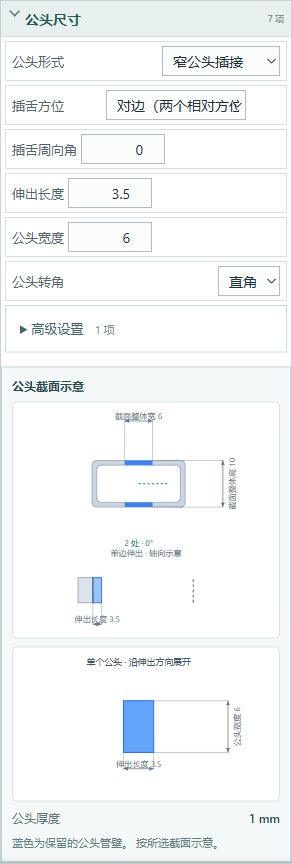
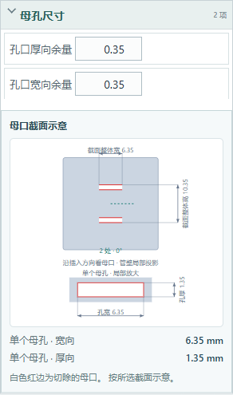

2026-10-28 · Windows x64 Release · 保留正式授权限制。
安装包：D:\penguinchinage0609\release\tubedesigner\20261028-v0.3.3\安装包\TubeDesigner-0.3.3-20261028-x64-Setup.exe
以下截图来自最终安装包解出的独立程序。本例公头宽 6 mm、总余量 0.35 mm，单孔宽为 6.35 mm；公管壁厚 1 mm，厚向总余量 0.35 mm，单孔厚向开口为 1.35 mm。


| 项目 | 结果 |
|---|---|
| 安装器 | 正式 NSIS，0.3.3 / 0.3.3.0，190,437,455 bytes。 |
| 成品文件 | 解包后 1007/1007 文件大小及 SHA256 同时匹配发布清单与审计记录，零差异。 |
| 资源与依赖 | 599 个当前源码资源一致；131 DLL 与一致 Release 基准相同。164 PE、597 ZIP 条目扫描通过，无调试运行库、私钥或客户数据。 |
| 授权 | 强制授权有效，开发及 Release 绕过关闭；现有授权被实际成品接受，TDREI001 再次授权支持保持有效。 |
| 实际启动 | 最终安装包解出的独立程序已启动，调用真实原生预览和创建接口；三个分组、公头特写与母孔 6.35 / 1.35 mm 读数正确，输入保持一致。 |
SHA256：006878D1F8551EA45B785B3BADD58B983190B560BF45F6AB75E2F80C7B8D65F2
本次验证覆盖验包和解包后独立程序实操。未执行实际安装、覆盖升级或卸载，也未进行客户 TPM 试用重签导入。旧 0.3.2 安装包保留。